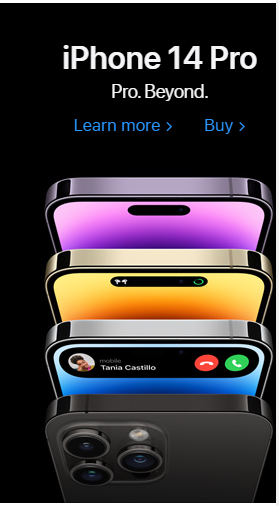

Apple's website uses visual hierarchy
to guide users' attention towards the most important information.
On the mobile homepage, the largest and most prominent element is the product banner,
which features the latest iPhone model. The product banner is
followed by a smaller section highlighting Apple's services, and
then smaller sections showcasing different products.
This creates a clear visual hierarchy that directs users to focus on the latest product,
then the services, and then the other products.
Dropbox's website uses white space and a
clean design to create a sense of simplicity and ease-of-use.
The mobile homepage features a large header image, a simple
navigation menu, and plenty of white space around the different sections.
This creates a clear visual separation between different elements,
and helps users focus on the most important information.
The use of white space also makes the website feel less
cluttered and overwhelming.
Nike's website uses contrast
to create a sense of excitement and energy. The mobile homepage
features a high-contrast design with bold typography,
bright colors, and dynamic images. This creates a sense of
urgency and excitement, and encourages users to explore the
website further. The use of contrast is particularly
effective in drawing attention to calls-to-action,
such as "Shop Men's" and "Shop Women's", which are presented in bright,
contrasting colors that stand out from the rest of the page.